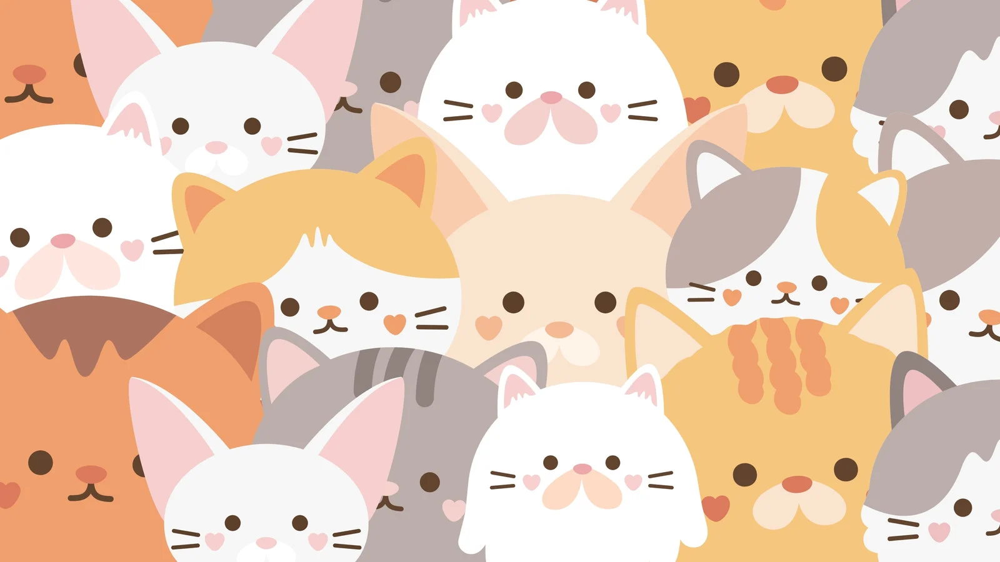

Bienvenid@ a la página web de los gatitos más monos del mundo. Aquí podrás encontrar una galería de fotos de gatitos adorables y un formulario de contacto para cualquier consulta o comentario que tengas.
